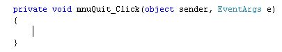

C# Code for your Quit Menu
<< Continues from the previous lesson
Of course, a menu is no good if nothing happens when you click an item. So we need to add code behind the menu items. We'll start with the Quit item, which should be on your File menu. There's only one line of code for this.
Return to your form, and click the menu strip. Click the File item to see its menu. Double click on your Quit item and the coding window should open. Your cursor should be flashing between the curly brackets of the Quit code stub:

Notice that the Name you gave your menu item is used in the code stub: mnuQuit. But when a user clicks your Quit menu, you want the programme to end. To close down a Windows application, you can use this:
Application.Exit( );
So add that line of code between the curly brackets of your Quit code stub. Run your programme and test it out. Hit the CTRL and SHIFT keys, and then the letter Q on your keyboard. The programme should close straight away. It does this because of the key combination shortcuts you added.
To see your underline shortcuts in action, start your programme again. Press the ALT key on your keyboard and you should see all the underlines appear for File, Edit and View. Press the letter "F" on your keyboard (the underlined letter), and the menu should drop down. Now press the letter Q on your keyboard. Because this is the underlined letter, the programme should exit.
You can add more code to menu items - anything you like, in fact. Something
you do see on Quit menus is a message box:
"Are you sure you want to Quit?"
To add a message box to your own code, try this:
if (MessageBox.Show("Really Quit?", "Exit",
MessageBoxButtons.OKCancel) == DialogResult.OK)
{
Application.Exit();
}
The first two lines should be one line in your code. It's only on two lines here because there's not enough room for it on this page. But in between the round brackets of an if statement, we have a message box:
MessageBox.Show("Really Quit?", "Exit", MessageBoxButtons.OKCancel)
This will get you a dialogue box with OK and Cancel buttons. C# will wait until the user clicks a button. Our code uses an if statement to test which button was clicked. To see which one the user clicked, you add this on the end:
== DialogResult.OK
So the line reads "IF the result of the dialogue box was that the OK button was clicked, then Exit the Application."
In the next part, you'll see how to code for your Edit menu.